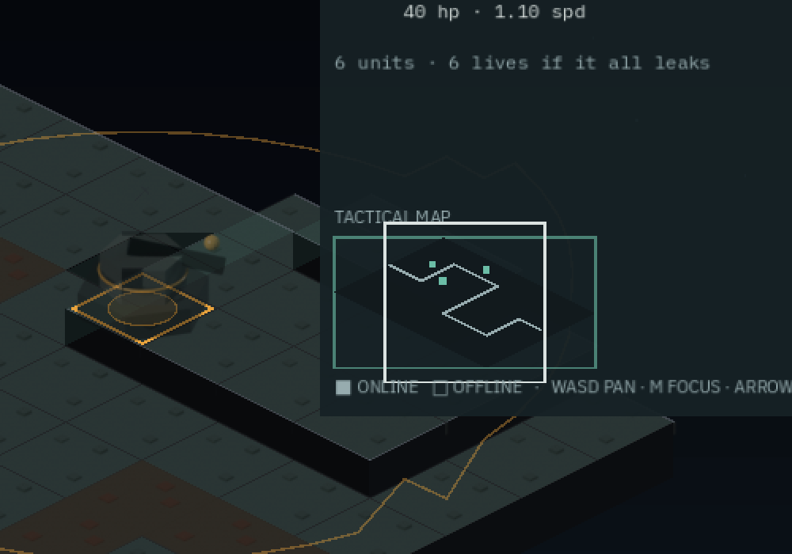
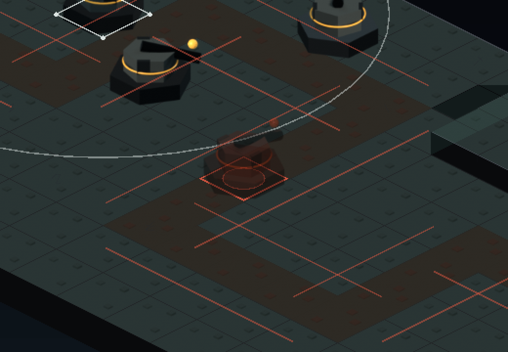
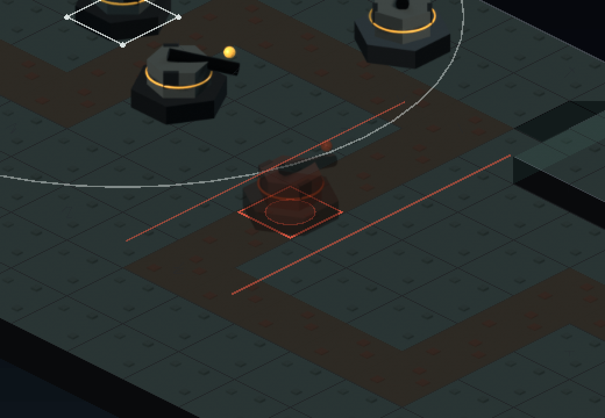
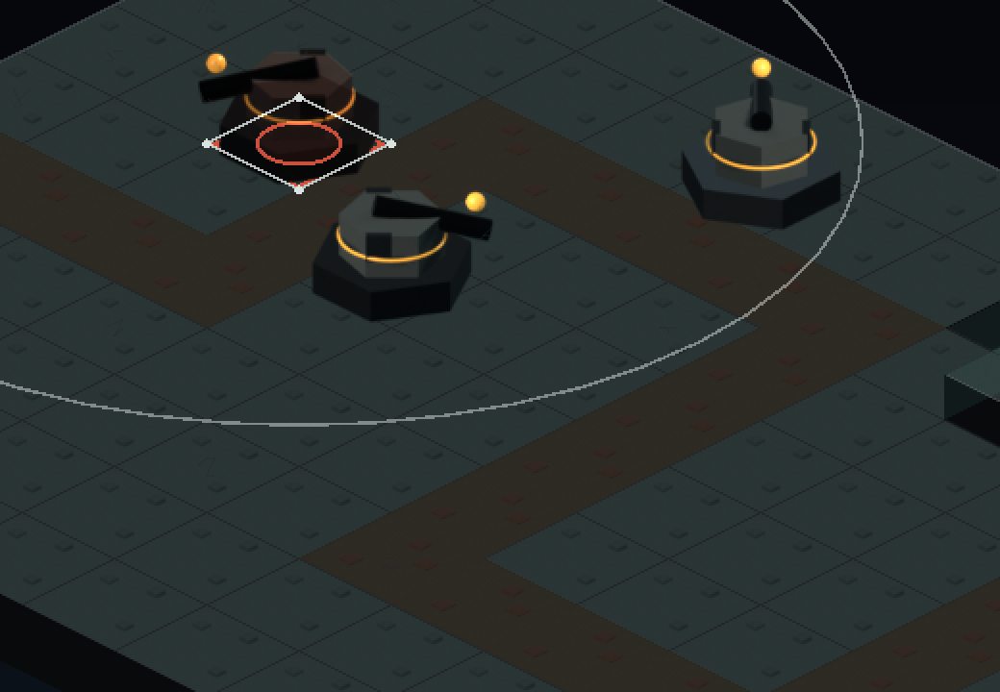
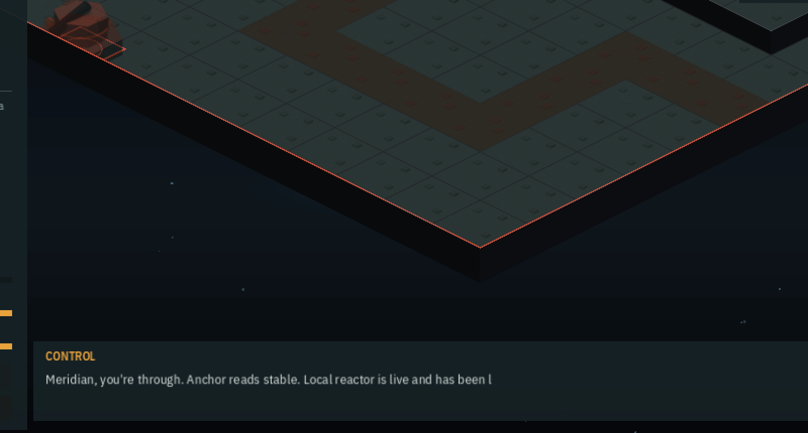

Three refusals that look different
Free placement took away the slot tiles, and with them the entire visual language of where can I build. The board came back continuous with no indication of where a build would be accepted — and the refusal had quietly become three different reasons that one red ring could not tell apart. This is the ghost, the buildable wash, and the three pictures. It also retires the tile_slot sprite rather than repurposing it as the wash, which is the decision the issue asked for and which the sprite itself settles. The interesting part is the thing the first screenshot killed: a lane-standoff treatment that was correct, and unusable.
PLC-01 and PLC-06 between them deleted the slot set — an emplacement now stands at a fractional position and legality is a predicate over a continuous board rather than membership in a list of authored tiles. That was the point, and it left three things blank at once: the board no longer painted where you could build, the hover ring could only say yes or no, and the refusal had become three distinct reasons wearing the same red.
The decision the issue asked for, and the sprite that settles it
PLC-07 names an explicit fork: retire the tile_slot sprite, or repurpose it as the buildable-area wash. Looking at it answers it.
It is a raised, bevelled pad with a teal ring and four corner bolts — discrete geometry with real height, a hardpoint. Tiled across a region it reads as a *field of hardpoints*, which reinstates the exact “these are the slots” language this issue exists to remove. A wash has to be a tint, not an object. So: retired.
Removing the asset is filed separately (LF-216) and deliberately not bundled in. It triggers the art pipeline and a re-import — the step that blanks the owner's running game if mishandled — and a red sprite atlas in a UI pull request would read as a UI regression. One correction to the spec while passing: it says dropping the sprite makes sprite coverage fall to 21 of 26. It would not. That check compares enemy and tower ids only; tile_slot is a prop, so asset coverage is what governs it.
What a legal placement looks like now

The screenshot that killed the first design
The lane-standoff refusal is supposed to show the keep-out corridor. The first version drew it for every segment of every lane, which is correct and completely unusable:

The information a player needs is local: *which* piece of lane, and by how much. So it finds the nearest segment, draws its two offset edges over that segment alone, and runs a connector from the ghost to the nearest point on it — the measurement the rule actually made, drawn.

The other two


Reading the rule instead of copying it
The wash is bounds and lane standoff, never overlap — overlap depends on what is currently built, so folding it in would invalidate the cache the moment anything is placed, and it is also the wrong picture. The wash answers *“where does this weapon fit on this board at all”*, which is a property of the level; what is in the way right now is answered at the cursor.
And it gets that answer by reading _placement_reason()'s fixed test order rather than re-deriving two of its three tests: the function returns the first failure, so OK or OVERLAP coming back is proof that bounds and standoff both passed. A second, drifting copy of a rule is precisely what PLC-02 exists to prevent.
A measurement that was wrong, and the fix
“I can barely see the wash” is not a measurement, so it got measured — by diffing a frame with a tower armed against one without. Zero pixels differed, which briefly looked like the wash was not drawing at all.
It was drawing. anchor_view.gd:253 arms the first unlocked tower at boot, so there is no unarmed state and both frames had a ghost and a wash. The experiment had no control in it. Re-run properly, by A/B-ing the constant itself, the wash changes 235,333 pixels and lifts ground from (35,40,41) to (41,53,52) — a consistent +13 on green. Subtle by design; it sits under every sprite on the board and must not compete with the emplacements standing on it.
Worth keeping the failure: the first instinct on a zero-diff was that the code was broken, and the actual fault was in the instrument. On a board with one lane the wash is also close to tautological — “everywhere except near the lane” — and it earns its place on the multi-lane theatre-scale boards it was designed for, not on anchor-01.
One refactor, proven inert
_cull_band() is lifted out of _draw_board() so the wash culls with exactly the same arithmetic instead of a second copy — two passes disagreeing about what is on screen shows up as a strip of tint hanging off the edge of the board at one zoom level. Proven a pure refactor the only way worth trusting: the frame afterwards is byte-identical, zero pixels changed.
Commits
c9a7abcfeat(ui): a ghost, a buildable wash, and three refusals that look different